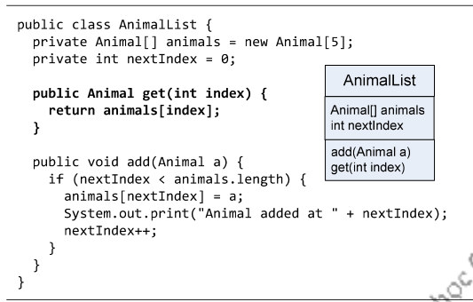
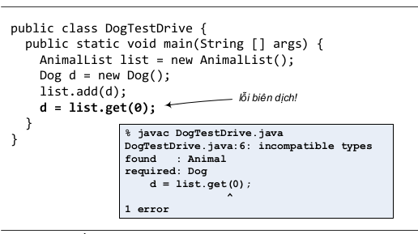
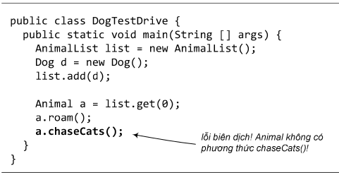
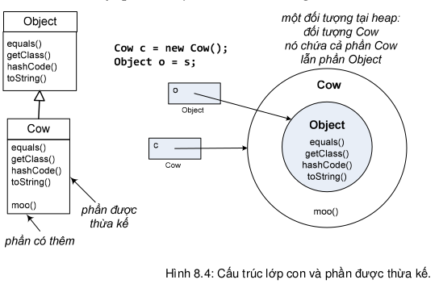
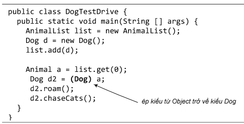

8.6. ĐỔI KIỂU – KHI ĐỐI TƯỢNG MẤT HÀNH VI CỦA MÌNH Rắc rối của việc dùng cơ chế đa hình coi mọi thứ như là một Object hay coi các đối tượng động vật như là một Animal là đôi khi các đối tượng có vẻ như đánh mất (tạm thời) các đặc trưng của mình. Dog có vẻ mất các đặc điểm của chó. Ta hãy xem chuyện gì xảy ra khi một phương thức trả về một tham chiếu tới một đối tượng Dog nhưng khai báo kiểu trả về là Animal.
Nhớ lại lớp AnimalList ta đã tạo để quản lý danh sách các con vật. Giả sử AnimalList đã có thêm phương thức get(int index) trả về tham chiếu tới đối tượng đứng tại vị trí index trong danh sách.
 Để ý rằng phương thức get() gọi từ list trả về một tham chiếu tới chính đối tượng Dog nói trên, nhưng dưới dạng một tham chiếu kiểu Animal. Việc này hoàn toàn hợp lệ. Nhưng trình biên dịch không biết rằng thứ được trả về từ đó thực chất đang chiếu tới một đối tượng Dog, cho nên nó không cho phép ta gán giá trị trả về đó cho một tham chiếu kiểu Dog.
Nếu ta gán giá trị đó cho một tham số kiểu Animal, chẳng hạn, Animal a = list.get(0), thì trình biên dịch sẽ không phàn nàn gì. Tuy nhiên, khi đó ta sẽ chỉ có thể gọi các phương thức mà Dog thừa kế từ Animal, chẳng hạn roam(), chứ không thể gọi phương thức mà chỉ Dog mới có, như chaseCats() chẳng hạn.
Ngay cả khi ta biết chắc chắn đối tượng có hành vi chaseCats (nó thực sự là một đối tượng Dog!), trình biên dịch chỉ nhìn thấy nó như là một thứ kiểu Animal, mà Animal thì không có chaseCats().
Vấn đề ở đây giống như ta đã nói đến ở Mục 7.9. Để xác định xem ta có thể gọi một phương thức nào đó hay không, trình biên dịch dựa trên kiểu tham chiếu chứ không dựa trên kiểu đối tượng thực tế.
Vậy cơ chế thừa kế có bản chất như thế nào? Mỗi đối tượng chứa tất cả những gì nó thừa kế từ tất cả các lớp cha, ông, tổ tiên của nó, trong đó có cả lớp Object. Vậy nên nó có thể được coi là một thực thể của mỗi lớp cha ông đó. Lấy ví dụ lớp Cow đơn giản. Một đối tượng Cow có thể được đối xử không chỉ như một đối tượng Cow, nó còn có thể được xem như một Object. Khi ta gọi new Cow(), ta được một đối tượng tại heap – một đối tượng Cow – nhưng đối tượng đó có một cái lõi là phần Object (chữ cái O viết hoa) của nó. Một tham chiếu kiểu Cow tới đối tượng này có thể 'nhìn thấy' toàn bộ đối tượng Cow, do đó có thể truy nhập toàn bộ các phương thức của Cow, bao gồm cả các phương thức được thừa kế. Trong khi đó, một tham chiếu kiểu Object chiếu tới cùng một đối tượng chỉ có thể 'nhìn thấy' phần Object của đối tượng đó, do đó chỉ có thể truy cập phần đó.
Như vậy ta đã giải thích được tại sao khi dùng một tham chiếu kiểu lớp cha cho đối tượng thuộc lớp con thì lớp con có vẻ như mất bản sắc riêng.
Nhưng ta vẫn chưa giải quyết xong vấn đề của chương trình DogTestDrive. Đối tượng mà ta lấy ra từ danh sách list thực sự là Dog, vậy làm cách nào để gọi được phương thức của Dog? Ta phải dùng một tham chiếu được khai báo kiểu Dog. Sao chép tham chiếu kiểu Animal mà ta đang có và ép sang kiểu Dog để ghi vào một tham chiếu kiểu Dog. Sau đó, ta có thể dùng tham chiếu Dog để gọi phương thức của Dog như bình thường.

Nếu hành động ép kiểu của ta là sai, nghĩa là đối tượng đang quan tâm thực ra không phải kiểu Dog, thì khi chạy, chương trình của ta sẽ bị ngắt giữa chừng do lỗi run-time ClassCastException. Do đó, trong những trường hợp mà ta không chắc chắn về kiểu của đối tượng, ta có thể dùng toán tử instanceof để kiểm tra.
if (o instanceof Dog) {
Dog d = (Dog) o;
// Gọi các phương thức của đối tượng d một cách an toàn
d.bark();
d.chaseCats();
}